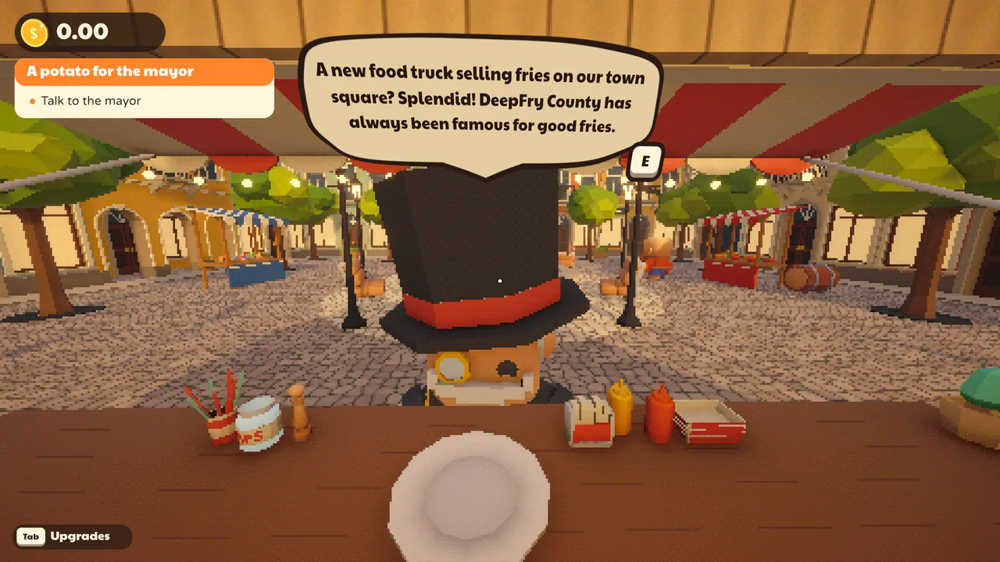
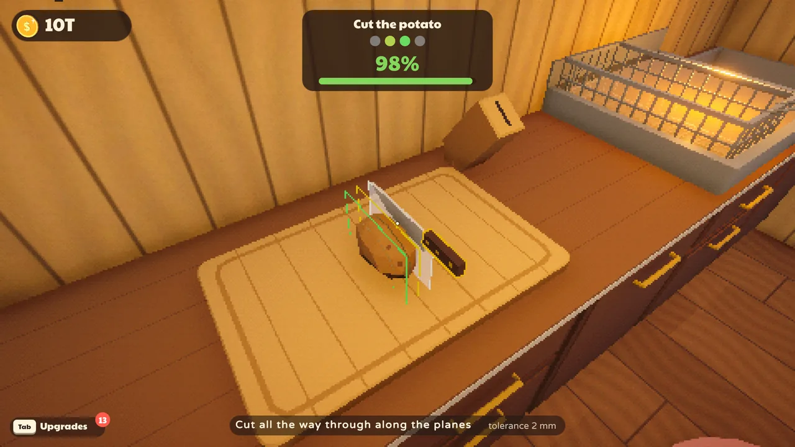
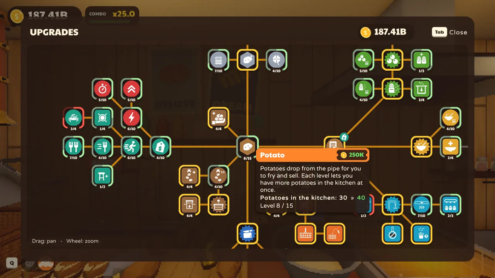
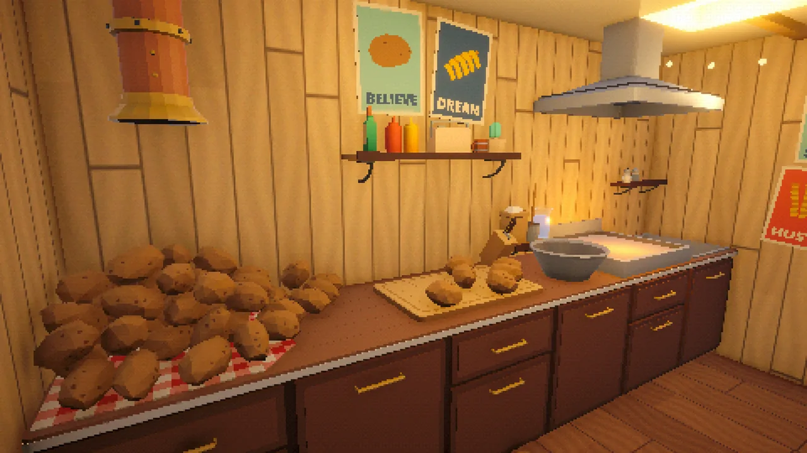
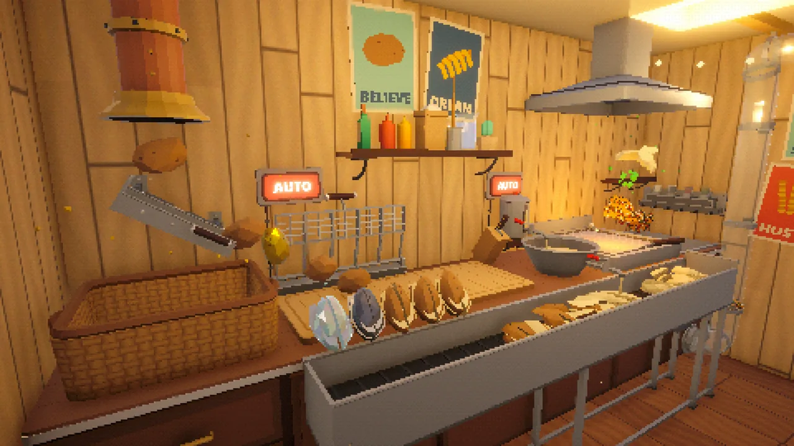
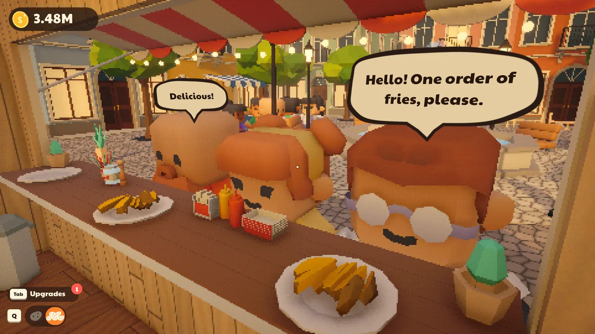
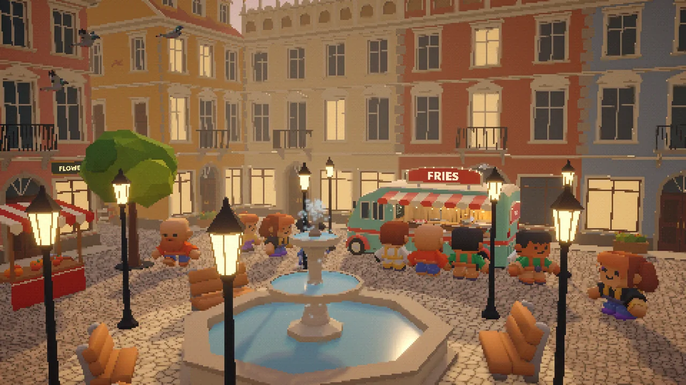
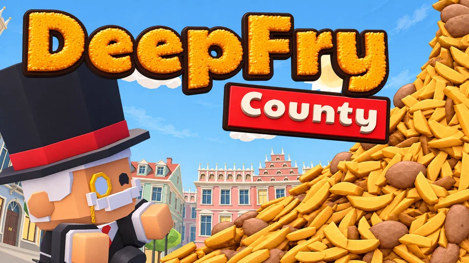
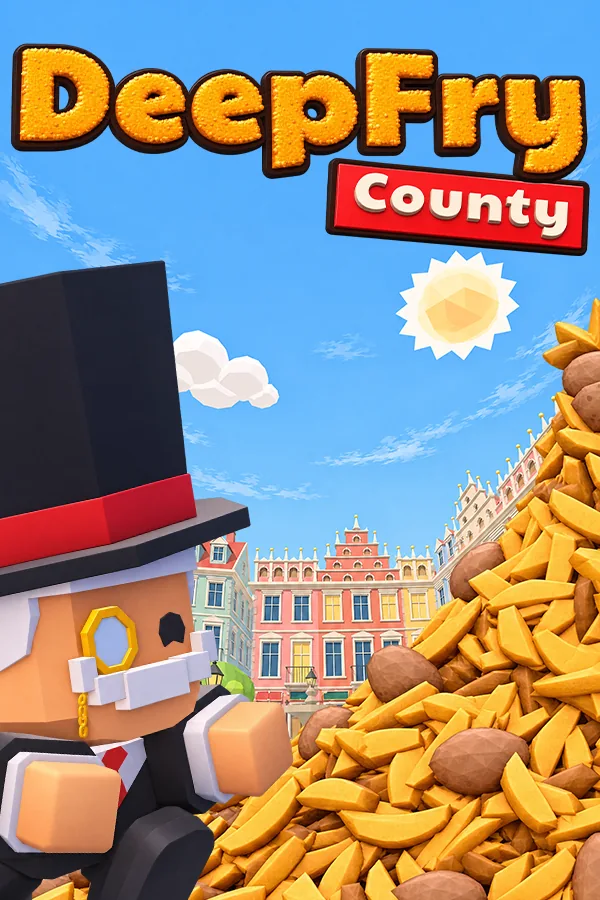
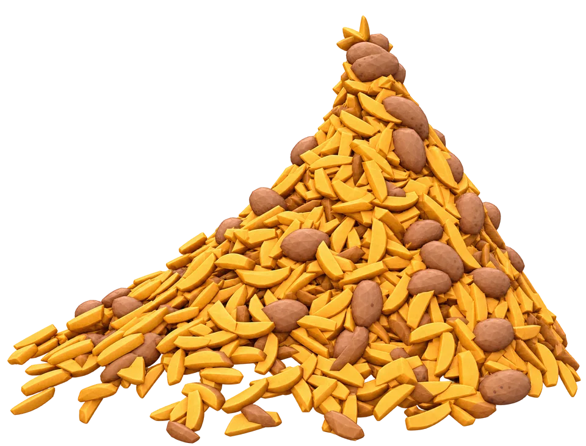

About the game
You have a food truck, a fryer and a pipe that rains potatoes. Cut, fry and season them with goofy physics and feed the whole town. Buy upgrades until the fries make themselves. Your goal: repay the mayor's one-dollar loan by serving him the best potato he has ever eaten.
Masz food trucka, frytownicę i rurę, z której sypią się ziemniaki. Krój, smaż i przyprawiaj je ze zwariowaną fizyką i nakarm całe miasteczko. Kupuj ulepszenia, aż frytki zaczną robić się same. Twój cel: spłacić burmistrzowi pożyczonego dolara, serwując mu najlepszego ziemniaka, jakiego w życiu jadł.
你有一辆餐车、一台炸锅，还有一根会下土豆雨的管道。在搞怪的物理效果下切土豆、炸薯条、撒调料，喂饱整个小镇。不断升级，直到薯条自己搞定一切。你的目标：用市长这辈子吃过最好吃的土豆，还清他借你的那一美元。
У тебя есть фургончик, фритюрница и труба, из которой сыплются картофелины. Режь, жарь, приправляй с безумной физикой и накорми весь городок. Покупай улучшения, пока фри не начнет готовиться сама. Твоя цель — вернуть мэру долг в один доллар, подав ему лучшую картофелину в его жизни.
Tienes un food truck, una freidora y un tubo del que llueven patatas. Córtalas, fríelas y sazónalas con una física disparatada y alimenta a todo el pueblo. Compra mejoras hasta que las patatas fritas se hagan solas. Tu meta: devolverle su dólar al alcalde con la mejor patata de su vida.
Tienes un food truck, una freidora y un tubo del que llueven papas. Córtalas, fríelas y sazónalas con una física disparatada y alimenta a todo el pueblo. Compra mejoras hasta que las papas fritas se hagan solas. Tu meta: devolverle su dólar al alcalde con la mejor papa de su vida.
Você tem um food truck, uma fritadeira e um cano de onde chovem batatas. Corte, frite e tempere com física maluca e alimente a cidade toda. Compre melhorias até as fritas saírem sozinhas. Seu objetivo: pagar o dólar que o prefeito te emprestou servindo a melhor batata da vida dele.
Dein Foodtruck hat eine Fritteuse und ein Rohr, das Kartoffeln spuckt. Schneide, frittiere und würze mit verrückter Physik und mach die Stadt satt. Rüste auf, bis die Pommes sich selbst machen. Dein Ziel: dem Bürgermeister seinen Dollar zurückzahlen, mit der besten Kartoffel seines Lebens.
手元にあるのは、キッチンカーとフライヤー、そしてジャガイモが降ってくるパイプ。ハチャメチャな物理演算の中、ジャガイモを切って、揚げて、味付けして、町じゅうのお腹を満たそう。強化を買い進めれば、そのうちフライドポテトが勝手にできあがる。目指すは、町長が人生で食べた中で最高のジャガイモを出して、借りた1ドルを返すこと！
Un food truck, une friteuse et un tuyau qui crache des patates. Coupe, fais frire, assaisonne avec une physique loufoque et régale toute la ville. Améliore tout jusqu'à ce que les frites se fassent toutes seules. Ton but : rembourser le dollar du maire avec la meilleure patate de sa vie.
푸드트럭 한 대, 튀김기 하나, 그리고 감자가 쏟아지는 파이프. 엉망진창 물리 엔진 속에서 감자를 썰고, 튀기고, 양념을 뿌려 온 마을을 배불리 먹이세요. 감자튀김이 알아서 만들어질 때까지 업그레이드하세요. 목표는 시장님이 평생 먹어 본 최고의 감자를 대접해서, 빌린 1달러를 갚는 것!
Yemek kamyonun, fritözün ve patates yağdıran bir borun var. Onları çılgın fizikle kes, kızart, baharatla ve tüm kasabayı doyur. Patates kızartmaları kendiliğinden yapılana dek yükseltme al. Amacın: belediye başkanına olan bir dolarlık borcunu, hayatında yediği en iyi patatesle ödemek.
你有一台餐車、一個炸鍋，還有一根會下馬鈴薯雨的管子。在爆笑物理中切馬鈴薯、炸薯條、撒調味料，餵飽整個小鎮。不斷升級，直到薯條自己搞定一切。你的目標：端出鎮長這輩子吃過最棒的馬鈴薯，還清他借你的那一美元。
Hai un food truck, una friggitrice e un tubo che sputa patate. Tagliale, friggile e condiscile con una fisica strampalata e sfama tutta la città. Potenzia tutto finché le patatine non si fanno da sole. Obiettivo: restituire il dollaro al sindaco con la patata più buona della sua vita.
У тебе є фудтрак, фритюрниця й труба, з якої сиплеться картопля. Ріж, смаж і приправляй її з шаленою фізикою та нагодуй усе містечко. Купуй покращення, доки фрі не почне готуватися сама. Твоя мета — повернути меру позичений долар, подавши йому найкращу картоплину, яку він їв у житті.
Máš food truck, fritézu a rouru, ze které se sypou brambory. Krájej, smaž a kořeň je s bláznivou fyzikou a nakrm celé městečko. Kupuj vylepšení, dokud se hranolky nezačnou dělat samy. Tvůj cíl: splatit starostovi vypůjčený dolar tou nejlepší bramborou, jakou kdy jedl.
Van egy büfékocsid, egy fritőzöd és egy csöved, amiből potyog a krumpli. Vágd, süsd és fűszerezd bolondos fizikával, és etesd meg az egész városkát. Fejlessz, és a sült krumpli végül magától készül. A célod: visszafizetni a polgármester egydolláros kölcsönét élete legjobb krumplijával.
Je hebt een foodtruck, een friteuse en een buis waar aardappels uit regenen. Snijd, frituur en kruid ze met knotsgekke physics en voed het hele stadje. Koop upgrades tot de friet zichzelf maakt. Je doel: de burgemeester zijn dollar terugbetalen met de beste aardappel van zijn leven.
Du har en foodtruck, en fritös och ett rör som det regnar potatis ur. Skär, fritera och krydda med knasig fysik och mätta hela stan. Köp uppgraderingar tills pommes fritesen gör sig själv. Ditt mål: betala tillbaka borgmästarens dollar genom att servera honom hans livs bästa potatis.
Bạn có một xe đồ ăn, một nồi chiên và một cái ống trút khoai tây như mưa. Cắt, chiên, rắc gia vị với vật lý tấu hề và cho cả thị trấn ăn no. Mua nâng cấp đến khi khoai tây chiên tự động ra lò. Mục tiêu: mời thị trưởng củ khoai tây ngon nhất đời ông để trả khoản vay một đô la.
Kamu punya food truck, penggorengan, dan pipa yang menjatuhkan kentang. Potong, goreng, dan bumbui dengan fisika kocak, lalu kenyangkan seisi kota. Beli upgrade sampai kentang goreng jadi sendiri. Tujuanmu: melunasi pinjaman satu dolar wali kota dengan kentang terbaik seumur hidupnya.
DeepFry County is a first-person cooking incremental with goofy physics, set in a food truck on the square of a small town.
Potatoes rain from a pipe in the ceiling. Catch them, cut them, fry them, season them and get them onto the plates before the next ones land. It all runs on physics, so fries fly, fall and burn, and whatever ends up outside the truck belongs to the pigeon.
Every portion you sell pays for something new: better fries, hungrier customers and one machine after another, until the whole kitchen runs by itself.
Then the potatoes start to change. Silver, golden, diamond, cosmic: each one is worth more than the last, and the mayor, who lent you a dollar to get started, wants to taste them all.
Features
- Goofy physics. Every fry is a real object. It flies, it falls, it burns, and sometimes a pigeon takes it.
- Hands-on cooking. Cut, fry, season and serve by hand, as fast as the potatoes keep coming.
- Automate the kitchen. Upgrade the truck one machine at a time, until the fries make themselves.
- Ever pricier potatoes. Silver, golden, diamond and cosmic, each worth far more than the last.
- Pay back the mayor. He lent you one dollar to start. Feed the whole town and serve him the best potato he has ever eaten.
Trailer
Screenshots
7 screenshots in 3840 × 2160, taken in the game. Click one to see it full size.














The same screenshots with the game in another language:
- Polski 3.9 MB
- 简体中文 3.8 MB
- Русский 4.0 MB
- Español (España) 4.0 MB
- Español (Latinoamérica) 4.0 MB
- Português (Brasil) 4.0 MB
- Deutsch 4.0 MB
- 日本語 4.0 MB
- Français 4.0 MB
- 한국어 3.9 MB
- Türkçe 4.0 MB
- 繁體中文 3.9 MB
- Italiano 4.0 MB
- Українська 4.0 MB
- Čeština 4.0 MB
- Magyar 4.0 MB
- Nederlands 4.0 MB
- Svenska 4.0 MB
- Tiếng Việt 4.0 MB
- Bahasa Indonesia 4.0 MB
GIFs and clips
10 short moments recorded in the game. Each one comes as a GIF and as a 1080p MP4 with the game's sound.
Hand work 15 s
Catch, cut, fry, season and serve, all by hand.

Potato rain 12 s
The pipe in the ceiling never runs dry.

The pigeon 8 s
Whatever lands outside the truck, the pigeon takes.

Customers 11 s
Every customer turns into the potato they ate.

The mayor 37 s
The mayor's first visit and the one-dollar loan.

The tree 5 s
Upgrades, machines and new potatoes in one tree.

Machines 15 s
Each machine takes a job off your hands.

New potatoes 9 s
Silver, golden, diamond, cosmic: each worth more than the last.

The full line 13 s
Every machine bought: the fries make themselves.

Out to the square 13 s
From the kitchen out over the town square.

Logo and art
The logo, the icon and the store art as PNG. The logo, the mayor, the potato heap and the icon have transparent backgrounds.

Logo
PNG, 3840 × 1408, transparent
Download 5.0 MB

Key art
PNG, 3840 × 2160
Download 8.9 MB
Key art without the logo
PNG, 3840 × 2160
Download 7.4 MB
Header
PNG, 920 × 430
Download 743 KB

Vertical art
PNG, 600 × 900
Download 751 KB
Wide banner
PNG, 3840 × 1240
Download 5.4 MB
The mayor
PNG, 2256 × 3664, transparent
Download 6.6 MB

Potato heap
PNG, 3296 × 2512, transparent
Download 8.3 MB
Icon
PNG, 2048 × 2048, transparent
Download 2.1 MBAbout the developer
pigeon_dp is Dawid Pijanowski, a solo developer from Poland. DeepFry County is a one-person project, with music by Jakub Szpyra.

Credits
- Game
- Dawid Pijanowski
- Music
- Jakub Szpyra
- Game design consulting
- Krzysztof Tomaszek
Contact
Press and creators
Keys for the full game go out closer to the release. Ask at the address above.
Videos and streams
You are welcome to stream DeepFry County and to make and monetise videos of it, music included. No need to ask first, though a link to your video is always nice to get.